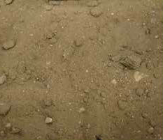
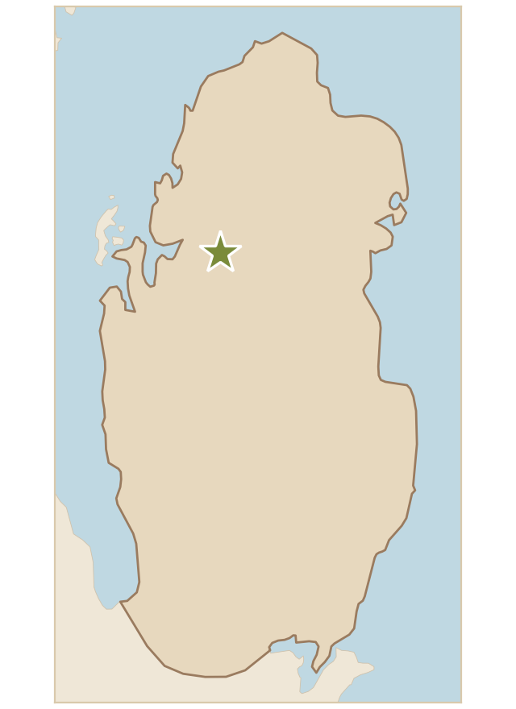

تربة ذات حبيبات صغيرة ومتوسطة مع قطع صخرية متناثرة، ولونها بني فاتح إلى بني داكن، مما يوحي بوجود مواد عضوية تشير إلى تربة طينية كثيفة. وتُعد المكون الغالب لترب الروضات، حيث تنمو بها أشجار السلم والعوسج والسمر والنباتات الطبية والعطرية الفطرية، وكذلك الكمأة متى وُجد الرقروق والأسخبر.
Soil with small and medium grains and scattered rock fragments, light to dark brown, which suggests organic matter and indicates a dense clay soil. It is the predominant component of rawdat soils, where salam trees (Vachellia ehrenbergiana), awsaj (Lycium shawii), samar (Vachellia tortilis) and wild medicinal and aromatic plants grow, as well as truffles (Terfezia spp. / Tirmania spp.) wherever rugrug (Helianthemum spp.) and askhabar are present.